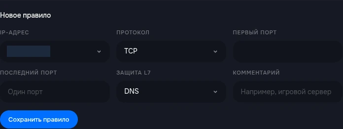
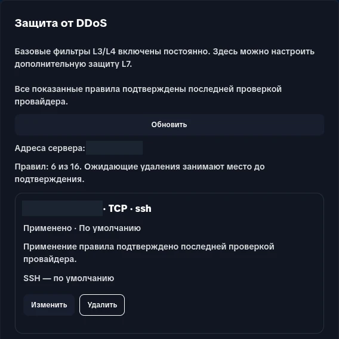
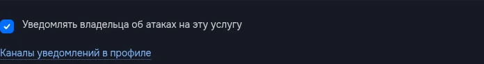

В карточке услуги есть блок «Защита от DDoS». Базовая защита L3/L4 включена постоянно. Здесь можно настраивать дополнительные правила L7 для протокола приложения — например, Minecraft Java, HTTP или SSH.
Настройки привязаны к конкретной услуге. Владелец может изменять их; участнику нужны права «Просмотр анти-DDoS» и «Управление анти-DDoS». С одним правом просмотра видны состояние и правила, но нет формы изменений. В HakuStack доступен тот же блок защиты VDS.
На какие адреса действует правило
| Услуга | Доступная область |
|---|---|
| VDS | IPv4 этого сервера и указанные вами порты |
| Pterodactyl | Только IP и порты, выделенные этому игровому серверу |
Список над формой показывает доступные адреса и порты. Для Pterodactyl нельзя охватить соседние порты ноды: каждый порт диапазона должен принадлежать вашему серверу. Протокол «TCP и UDP» для игровых услуг недоступен; выбирайте TCP или UDP, совместимый с приложением.
Если у адреса показано «настройка пока недоступна», прочитайте сообщение блока и обратитесь в поддержку. Указание другого IP или смена домена не предоставит доступ к чужому адресу.
Проверить правила по умолчанию
Для VDS предусмотрены стандартные правила, если соответствующие приложения защиты доступны у провайдера:
| Приложение | Протокол и порт |
|---|---|
| Minecraft Java | TCP 25565 |
| TLS | TCP 443 |
| HTTP | TCP 80 |
| SSH | TCP 22 |
| RakNet | UDP 19132 |
| MySQL | TCP 3306 |
| RDP | TCP 3389 |
Для распознанного сервера Minecraft Java в Pterodactyl предусмотрены правила Minecraft на выделенные TCP-порты. Фактически созданные правила помечены «По умолчанию». Если часть приложений временно недоступна у провайдера, блок сообщает об этом; ориентируйтесь на список и состояние каждого правила.
Правило защиты не устанавливает и не запускает соответствующую программу. Если приложение использует другой порт или протокол, настройте подходящее правило. Существующее правило на пересекающийся адрес и порт имеет приоритет: второе поверх него не добавляется.
Добавить правило
- В блоке «Новое правило» выберите IP-адрес своей услуги.
- Выберите «Защита L7» под фактическое приложение на этом порту.
- Укажите совместимый «Протокол». Недоступные сочетания отключены в форме.
- Введите «Первый порт». Для одного порта оставьте «Последний порт» пустым; для диапазона задайте его конец.
- При необходимости добавьте «Комментарий», чтобы помнить назначение правила.
- Нажмите «Сохранить правило» и проверьте состояние в списке.


Порты должны находиться в пределах 1–65535; конец диапазона не может быть меньше начала. Комментарий ограничен 255 символами. Выбирайте защиту под реальный протокол: фильтр другого приложения может мешать обычным подключениям.
Сохранение ещё не означает применение. Подтверждённое правило имеет состояние «Применено». При незавершённых изменениях интерфейс проверяет результат автоматически; для ручной проверки есть кнопка «Обновить».
Что означают состояния
| Состояние | Что происходит и что делать |
|---|---|
| «В локальной очереди» | Настройка сохранена в биллинге; применение провайдером ещё не подтверждено. Дождитесь проверки |
| «Результат запроса неизвестен» | Проверяется, была ли запись создана. Повторная отправка блокируется, чтобы не создать дубликат |
| «Проверяется применение» | Запись найдена у провайдера, но её активность ещё проверяется |
| «Применено» | Последняя проверка подтвердила применение |
| «Провайдер отклонил правило» | Правило не применено. Проверьте параметры и сообщение; при повторной ошибке обратитесь в поддержку |
| «Проверяется удаление/замена» | Старое правило ещё очищается; дождитесь подтверждения |
| «Требует проверки» | Автоматически подтвердить состояние не удалось. Передайте сообщение поддержке |


Общий статус наверху может сообщать о неподтверждённых изменениях, даже если часть правил уже применена. Проверяйте нужную строку. При потере связи с сервисом не создавайте то же правило повторно: сначала обновите состояние.
Лимит, изменение и удаление
У услуги есть лимит 16 правил. В него входят стандартные правила и записи, удаление которых ещё не подтверждено. Один непрерывный диапазон является одним правилом.
Нажмите «Изменить» у существующего правила, исправьте параметры и сохраните. Для удаления нажмите «Удалить» и подтвердите действие. Базовая защита L3/L4 при этом остаётся включённой. Новое правило с пересечением того же IP, портов и протокола создать нельзя — измените или удалите существующее.
Если лимит исчерпан, удалите ненужное правило и дождитесь подтверждения очистки. Если показаны фрагменты, ожидающие восстановления после изменения доступных портов, создание новых правил временно блокируется. «Отменить восстановление» отказывается от этих сохранённых фрагментов; очистка освобождённых портов продолжится.
Кнопка «Сбросить настройки защиты» после подтверждения удаляет пользовательские настройки L7 и возвращает предусмотренные для услуги правила по умолчанию. Это не способ выключить базовую защиту. После сброса снова проверьте список и состояния: очистка и создание правил могут завершаться не сразу.
Включить уведомления об атаках
Уведомления получает владелец услуги. Нужно включить оба уровня настроек:
- Владелец открывает «Аккаунт» → «Уведомления», выбирает email, Telegram или MAX для «DDoS-атаки на серверы» и нажимает «Сохранить уведомления». Мессенджер предварительно нужно привязать.
- В блоке защиты нужного сервера включите «Уведомлять владельца об атаках на эту услугу». Настройка сохраняется при переключении; проверьте результат в блоке.


Участник с правом управления защитой может включить настройку услуги, но сообщения всё равно отправляются владельцу по его каналам. Если у владельца не выбран ни один канал, интерфейс покажет предупреждение и ссылку «Каналы уведомлений в профиле».
Предусмотрены сообщения о начале, продолжении и завершении обнаруженной атаки. У игрового сервера уведомление иногда относится к общему IP ноды: это отдельно указано в сообщении и не доказывает атаку именно на ваш игровой порт.
Если уведомление не пришло, проверьте оба уровня настроек и доступность выбранного канала. Для обращения о защите укажите услугу, время события, правило и показанное состояние. Отдельные правила L7 и уведомления не заменяют проверку доступности самого приложения.